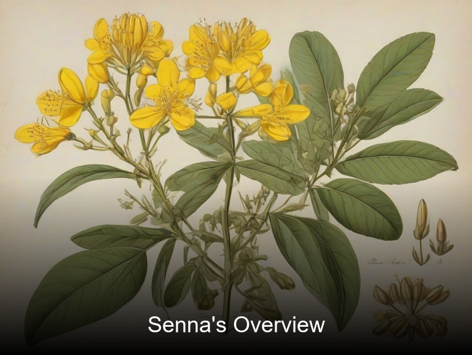
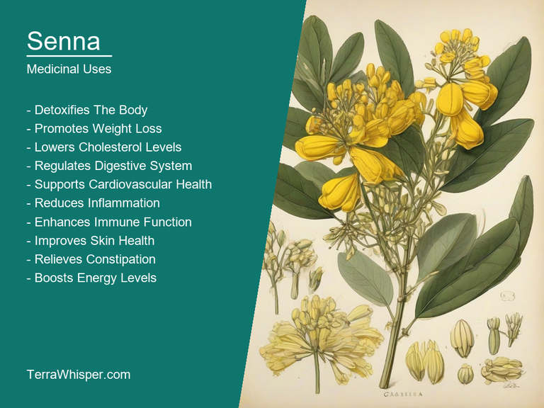
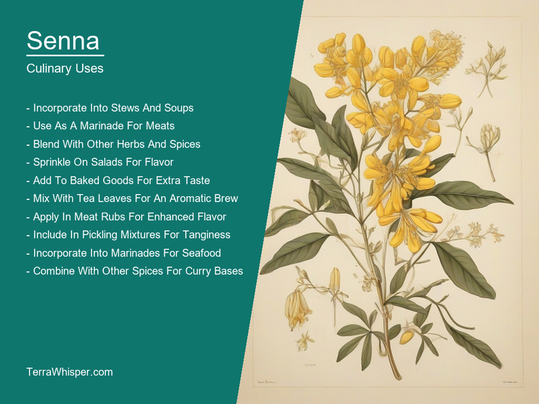
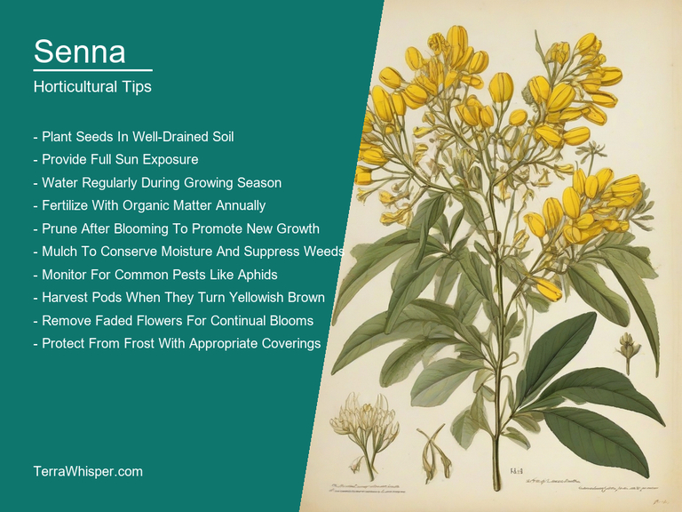
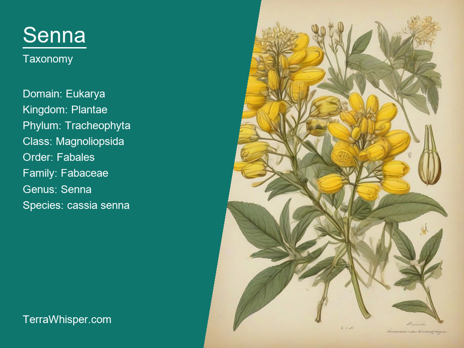
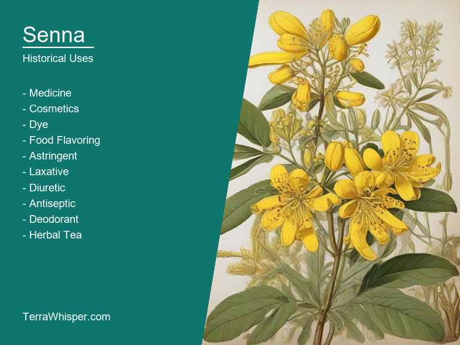

Senna, scientifically known as Cassia senna, is a flowering plant in the family Fabaceae. It is native to Africa and the Middle East but has been cultivated in other parts of the world for its medicinal and culinary uses. The leaves and pods of this plant are commonly used as herbal remedies for treating various health conditions such as constipation, inflammation, and skin disorders. Additionally, the seeds are used as a spice in cooking, imparting a slightly bitter taste to dishes.
Senna is also valued for its horticultural and ornamental features. The plant can grow up to 10 feet tall with attractive green leaves that are arranged alternately along the stem. It produces small yellow flowers which bloom from spring through autumn, giving it a long flowering season. These flowers attract pollinators like bees and butterflies, making the Senna an excellent addition to any garden or landscape.
Botanically, Cassia senna belongs to the genus Senna within the Fabaceae family. It has been known since ancient times for its therapeutic properties. The use of this plant dates back to ancient Egypt and China where it was used as a laxative and to treat various skin conditions. In traditional medicine systems around the world, including Ayurveda and Chinese medicine, Senna continues to be used today due to its proven effectiveness in treating constipation and other digestive issues.
In this article, you will discover what are the medicinal and culinary uses of senna. Then, you'll learn how to cultivate it, what is its botanical profile, and how it was used historically.
Senna (Cassia senna) has many health benefits, which are due to its potent constituents such as sennosides, anthraquinone glycosides, and flavonoids that aid in laxative, antimicrobial, anti-inflammatory, and antioxidant properties.
The following illustration lists the most important uses of senna in medicine.

The medicinal constituents of Senna (Cassia senna) include sennosides, anthraquinone glycosides, and flavonoids that play a crucial role in imparting the herb's laxative, antimicrobial, anti-inflammatory, and antioxidant properties. It's important to understand that the most effective parts of Senna plants for medicinal purposes are its leaves and pods, while roots are used less often due to their lower concentration of active compounds.
The most commonly used parts of Senna (Cassia senna) for preparing various medical treatments include the leaves and pods. These parts contain a high concentration of essential compounds such as sennosides and anthraquinone glycosides, which possess significant medicinal benefits. Commonly prepared medicines from these parts include laxative teas, capsules, or suppositories to relieve constipation and treat bowel-related issues.
While Senna (Cassia senna) offers numerous health benefits, it's essential to be aware of potential side effects that may arise from its use. Commonly experienced adverse reactions include abdominal cramps, nausea, diarrhea, vomiting, and electrolyte imbalance if used in excess or for extended periods. It is also important to note that long-term use may cause dependency on the herb for regular bowel movements.
To ensure a safe and effective experience when using Senna (Cassia senna), it's crucial to adhere to certain precautions. Firstly, consult with your healthcare provider before starting any new medicinal practice to minimize potential risks. Additionally, avoid using Senna-based products if you have existing intestinal problems such as inflammatory bowel disease or ulcerative colitis. Also, it's best to limit usage when pregnant or breastfeeding due to the risk of affecting a fetus or infant. Finally, ensure proper hydration and maintain a balanced diet during treatment for optimal results.
Senna (Cassia senna) is a flowering plant that has been used for centuries in traditional medicine for its laxative effects, but did you know it also holds some culinary uses? Yes! Despite being more popularly known for its medicinal benefits, Senna can be incorporated into various dishes due to its unique flavor profile and nutritional content.
The following illustration lists the most common uses of senna for culinary purposes.

In terms of taste, senna has a slightly bitter and somewhat sweet flavor, which makes it an interesting addition to salads, soups, stews, and even some desserts. Its bitterness is reminiscent of coffee or dark chocolate while the sweetness adds depth to whatever dish you decide to incorporate it into.
When it comes to edible parts, all parts of the senna plant can be eaten - from leaves to seeds. However, it's essential to remember that overconsumption could lead to side effects due to its laxative properties. Therefore, while including senna in your culinary creations might sound adventurous, moderation is key.
Since senna can have a strong flavor profile, it's wise to start with small amounts and adjust according to taste preferences. It pairs well with other bitter ingredients like spinach or kale as well as sweet fruits such as apples or pears. Additionally, using fresh senna leaves instead of dried ones will give your dishes a more delicate flavor.
Despite its culinary potential, it's crucial to consider potential side effects and toxicity associated with consuming too much senna. While incorporating small amounts into your meals can provide some exciting gastronomical experiences, excessive intake may cause nausea, abdominal pain, or even dehydration due to its laxative effect on the digestive system.
To grow Cassia Senna, start by preparing a well-draining soil with a pH between 6.5 and 7.5. The seeds should be sown in spring or fall and require light to germinate. They can be planted directly into the ground or in containers. Keep the seed bed evenly moist but not waterlogged, as this may cause the seeds to rot. Once established, Cassia Senna can tolerate drought conditions and prefers full sun exposure for optimal growth.
The following illustration lists the most important tips to cutlitvate senna.

The ideal growing conditions for Cassia Senna include a warm climate with temperatures between 18-30°C (64-86°F). It is a hardy plant that does best in USDA zones 9-11, but can also be grown as an annual or container plant elsewhere. Soil should be well-draining and fertile, preferably with a pH between 6.5 and 7.5. The plant requires full sun exposure for optimal growth, though it may tolerate partial shade. Cassia Senna will perform best in locations with moderate rainfall, but can also survive drought conditions once established.
Maintenance of Cassia Senna mainly involves pruning and fertilization to maintain its shape and encourage healthy growth. Prune the plant lightly throughout the growing season to remove any dead or damaged branches, as well as to control size. For optimal flower production, it's recommended to pinch back young shoots when they reach about 15 cm (6 inches) tall. Fertilize the plant with a balanced fertilizer every 4-6 weeks during the growing season. Additionally, regular watering is important for healthy growth, but be careful not to overwater, as Cassia Senna prefers well-draining soil.
Senna, with botanical name Cassia senna, belongs to the domain Eukarya, kingdom Plantae, phylum Tracheobionta, class Magnoliopsida, order Fabales, family Fabaceae, genus Senna, and species senna. Common names include Alexandrian senna, Indian senna, and tana.
The following illustration display the botanical profile of senna.

Senna is a deciduous shrub or small tree that grows up to 4-5 meters tall. It has compound leaves with oddly numbered leaflets and yellow flowers arranged in racemes. The fruit is a pod containing seeds, which are used for medicinal purposes. Senna exhibits dimorphic features in flowers (different flower types on the same plant).
Variants of Cassia senna include C. angustifolia and C. marilandica. While C. angustifolia has narrower leaflets, C. marilandica has broader ones. The leaves of both species are pinnately compound with 13-21 pairs of leaflets and a terminal leaflet.
Senna is native to Africa but also grows in parts of Asia and Southern Europe. It thrives in dry, sandy soils and prefers semi-arid regions. Natural habitats include savannas, open woodlands, and along roadsides.
The life cycle of Senna starts with seeds germinating after exposure to heat or smoke. The plant then develops through vegetative growth before flowering in late summer or early autumn. After pollination, seed pods form containing several flat, brown seeds. These seeds are dispersed by wind and animals, allowing the species to spread across its natural range.
The origin of 'Senna', derived from a plant species known as Cassia Senana, finds its roots back to antiquity in Egypt where it is believed that this medicinal herb was first cultivated and used for various purposes such health issues relating the digestive system. Its name comes from an ancient Hebrew language word "sennu" meaning something of little value or worthless thing which might have been a reference at one point to its common usage as filler material by goldsmiths in Egypt, who mixed it with dung for this purpose and then sold items created using these materials. This herb is also known under different names such as Alexandrian Senna (referring the Egyptian origin), Indian senna or Tinnevelly tea which reflects its prevalence across multiple cultures due to trade from Ancient times right into early colonization eras, spreading it far and wide in Europe but also Central Asia.
The following illustration lists the most well known historical uses of senna.

The cultural significances of Senna extend beyond healthcare functions related specifically the gastrointestinal tract towards encompassing a broader perspective concerning different aspects like religion -in Islam there are specific instructions to avoid eating food which have ingredients containing this plant, it is used for rituals by some African tribes as part their beliefs while many cultures around Asia value its purported benefits ranging from detoxification and weight loss.
Throughout history Senna has been the subject of countless stories rooted in folklore where they play significant roles, often being associated with supernatural elements like fairies or witches depending upon region - one such tale features this herb as a vital component required by sorceress' potion while yet another story tells us how people were bewitched to only sing lullabys until cured through the use of Senna.
Numerous authors, writers have depicted 'Senna', its relevance or uses in their literary works reflecting both historical and anecdotal aspects - ranging from prominent English novelist Charles Dickens who used it as a laxative drug prescribed by characters within his novels to more recent times where author Shyam Selvadurai employed Senne, referencing its cultural importance amongst Sri Lankan Tamils during colonialism in their food rituals.
The folkloristic uses of Cassia senna are vast and varied as well - it has been utilized traditionally by various communities for remedial purposes like treating skin conditions such aches, pains or even rheumatic complications due to its believed medicinal values related antioxidants found within this plant species. Beyond mere usage these unique botanical elements hold symbolic value as well